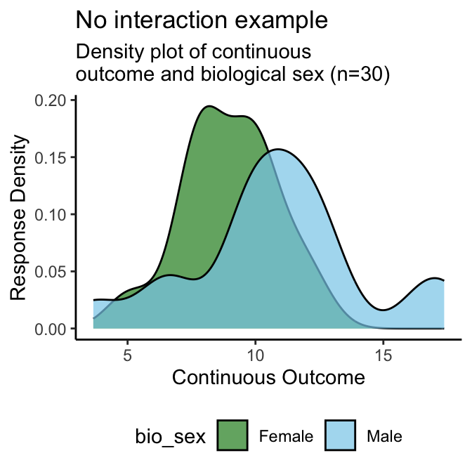
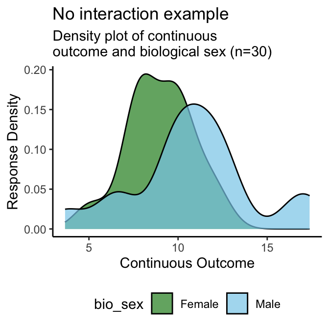

Chapter 4 SGBA of a Continuous Variable
Note 1: for conciseness, the following examples will only show results for two of the four gendered aspects of health items from the SGBA-5 (gender identity, and gender roles)
Note 2: for each of the following sections, an example outcome variable that demonstrates a relationship between that variable and the SGBA-5 item being assessed - the interaction example - and an example that does not demonstrate a relationship between itself and the SGBA-5 item - the no interaction example - are shown.
4.1 Biological Sex
A good idea is to start by visualizing the continuous variable’s distribution disaggregated by sex like the density plot in Figure 4.1. Then calculate disaggregated summary statistics for the continuous variable disaggregated by sex (Tables 4.1 and 4.2), and conduct a statistical test of difference in means (Welch’s t-test for this example).
4.1.1 Density Plots
 

Figure 4.1: Density Plot of Continuous Variable by Biological Sex Examples
Interpretation: From the above density plots (Figure 4.1) we can see a distinct overlap in the no interaction example with suggests that in that example’s sample does not have a meaningful difference in the continuous outcome by sex. Conversely, the interaction example density plot has two distinct peaks which suggests that its sample’s continuous outcome scores are associated with a participant’s sex.
4.1.2 Summary Statistics
| biological sex | n | mean continuous | SD continuous | median continuous | IQR continuous |
|---|---|---|---|---|---|
| Female | 14 | 3.5 | 1.94 | 4 | 2 |
| Male | 16 | 11.3 | 2.95 | 11 | 2 |
| biological sex | n | mean continuous | SD continuous | median continuous | IQR continuous |
|---|---|---|---|---|---|
| Female | 14 | 9.0 | 1.84 | 9 | 2 |
| Male | 16 | 10.8 | 3.47 | 11 | 3 |
Interpretation: As with the density plots, we see that the standard deviations of the continuous variable for both males and females overlap in the no interaction example (Table 4.1) - indicating a lack of significant difference by sex. The standard deviations of the continuous variable for both males and females do not overlap in the interaction example (Table 4.2) - indicating a potential association between that continuous outcome variable and sex.
4.1.3 Statistical Test
Next we will test the null hypothesis that biological sex does not have an impact on the continuous outcome variable being evaluated. Both the interaction example and no interaction example will be tested using a Welch’s t-test at an alpha of .05.
Note: Using a Welch’s t-test to test for statistically significant difference in these examples is a way, but by no means the only way in which this could be tested.
| Example | Test | T-score | 95% CI | df | p-value |
|---|---|---|---|---|---|
| Interaction | Welch’s t-test | -8.73 | (-9.72, -6.02) | 26.1 | 0.000 |
| No interaction | Welch’s t-test | -1.80 | (-3.85, 0.26) | 23.4 | 0.084 |
Interpretation: Similarly to the descriptive table and density plots, we see that the no interaction example (Table 4.3) does not show a significant difference by sex (T=-1.80, 95%CI=(-3.85,0.26), df=23.4, p-value>0.08). The interaction example (Table 4.3) shows a potential association between that continuous outcome variable and sex (T=-8.73, 95%CI=(-9.82,-6.02), df=23.4, p-value<0.001), meriting further research into this potential interaction. This means that when reporting whether there was an association found between a continuous outcome and biological sex in the no interaction sample we can report that: “The no interaction sample did not show evidence that biological sex was associated with the continuous outcome in this study”. Whereas the interaction sample, which did find a potential association, could report: “The interaction sample found statistically significant evidence that biological sex was associated with the continuous outcome in this study”.
4.1.4 Interpretation Reporting Template
Below are example templates for reporting whether an outcome variable is associated with biological sex as categorized by the SGBA-5. Replace the words in the square brackets to complete.
If an association was found:
In this study’s sample we found that a person’s self-reported biological sex at birth had a statistically significant association with [continuous variable name]. More detailed investigation of this relationship is required to directly interpret the potential effects this interaction.
If an association was not found:
In this study’s sample we found that a person’s self-reported biological sex at birth did not show a statistically significant association with [continuous variable name].
4.2 Gendered Aspects of Health: Gender Identity
In this example we will analyze the gendered aspects of health results from the SGBA-5 with a continuous variable of interest. First we will generate scatter (Fig A3 Plot A) and 2D-density plots (Fig A3 Plot B) of the continuous variable by the feminine-masculine continuum used in the SGBA-5, then we shall calculate a Pearson correlation coefficient between each gendered aspect of health item and the continuous variable.